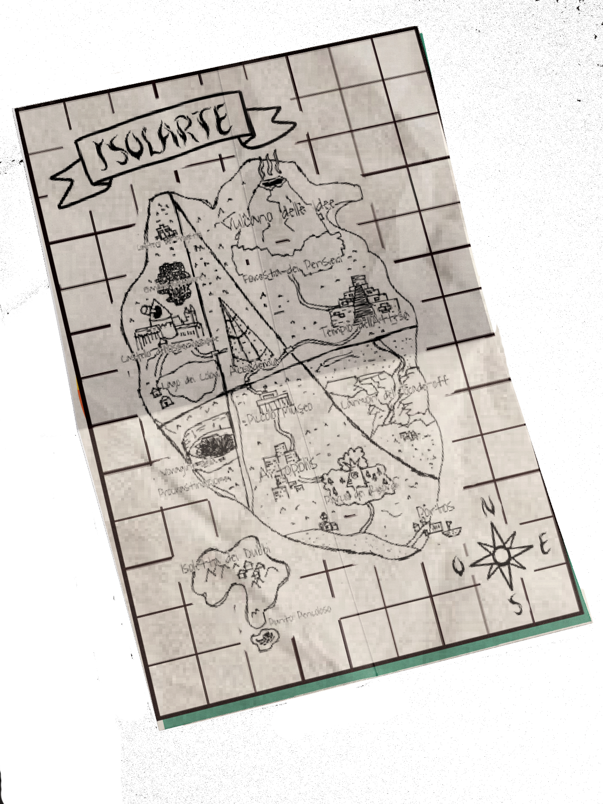
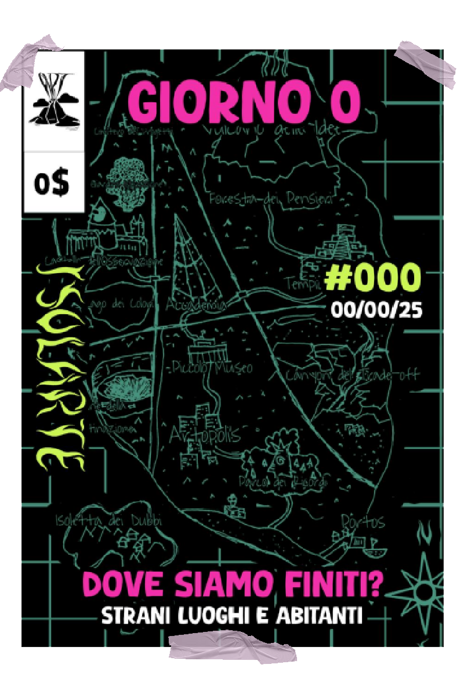
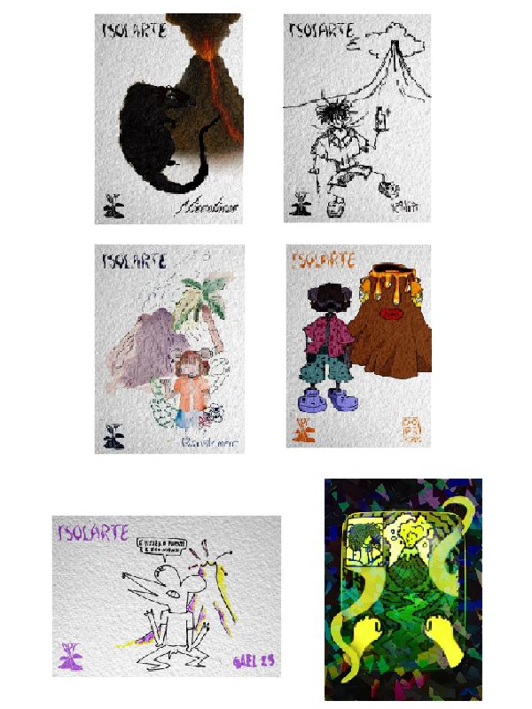
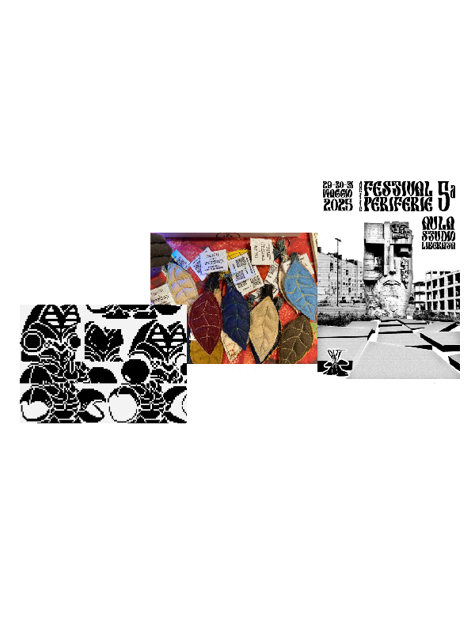

Isolarte è un progetto multiculturale e multimediale che si svolge prettamente sul territorio per diffondere cultura, arte e informazione in modo libero, accogliendo chi non ha la possibilità di diffondere le proprie creazioni o è troppo timid* per farlo[cite: 1].
Tutti gli artisti del collettivo sono disponibili per illustrazioni, cover art, grafiche editoriali, merchandising ed eventi su misura[cite: 1]. Esplora i loro lavori e contattali direttamente.
Clicca su un profilo per visualizzare le opere o richiedere una commissione personalizzata.
Illustrazione digitale, character design, cover art e poster underground.
Tratto grezzo, fumetto indie, cartoline punk e reinterpretazioni di Isotopo[cite: 1].
Disegno figurativo, bozzetti su carta, character styling e sketch art[cite: 1].
Pittura materica, acrilico su tela e contrasti intensi[cite: 1].
La rete di Isolarte conta oltre 20 creativi tra illustratori, grafici e autori in costante espansione[cite: 1].
Tutto si svolge su Isolarte, la terra degli artisti[cite: 1]. Ogni location è uno step che l'artista deve raggiungere per arrivare alla creazione di un'opera: dal Vulcano delle Idee al Tempio dell'Attesa, passando per la Foresta dei Pensieri e Artopolis[cite: 1].
Ogni artista arriva su Isolarte un po' per caso, per poi decidere se rimanere o andare via[cite: 1].


Riprendiamo il concetto storico di fanzine per unire l'informazione libera all'esplorazione narrativa dell'isola[cite: 1]. La lore si sviluppa sia nell'edizione cartacea distribuita sul territorio, sia nei contenuti digitali su Instagram[cite: 1].
Il giornaletto è e sarà sempre gratuito per rimanere accessibile a chiunque[cite: 1]. Per sostenere le stampe realizziamo merchandising a basso costo e spirito punk: spille, cartoline, portachiavi, collane e t-shirt[cite: 1].
Dalle cartoline con la mascotte Isotopo alle produzioni grafiche con realtà locali[cite: 1].

La mascotte di Isolarte reinterpretata in stili differenti dagli artisti della nostra rete (tra cui Gael, Niccolines, Katia, soste.mere, DOPE)[cite: 1].

Collaborazioni per copertine, merchandise e poster: portachiavi a tema con Versup, copertine con Plaguelabs e memorabilia per il Festival delle Periferie con l'Aula Liberata[cite: 1].